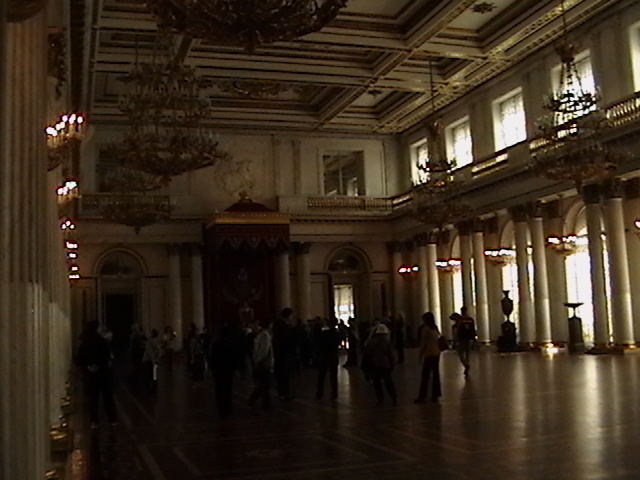
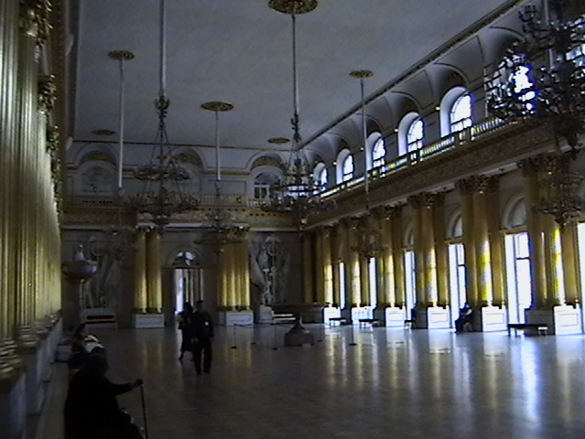

4 May 2005
Well, my back told me today to take it easy so I’m spending the afternoon at the hostel, listening to my iPod and knitting. The plan tomorrow is to head out of the city to Pushkin to visit Catherine’s palaces (yes, there are more than one), so I want to be up to speed by then!
This morning, I didn’t wake up until almost 11! We got ready and spent about 2 hours at the Hermitage – finally found the Picassos! (They were worth it.)
Anyhow, I’ll post more when I’m not so sore. I hope this Advil kicks in soon!
3 May 2005

Ah, this feels like Russia. European Russia. The Russia of movies and “happy” stories. Soon enough we’ll be seeing the more wild side of this interesting country. But for now, this large square makes me pretty thrilled to be here. (And I can’t wait to review the movie footage.)
Here’s a shot of PART of The Winter Palace, which houses much of the Hermitage collection.
May 9 is “Victory Day” in Russia, the celebration of the liberation of Russia from the Nazis in 1945. On the flight over, my guidebook spent a few paragraphs talking about Russian History from WWII and specifically mentioned the Liberty Ships that brought supplies from the Allies into the northern port city of Murmansk. The book said that this had a profound effect on the success of The Red Army, especially early on in the war. Well, my dad was the signalman on one of those ships! Pretty cool!
So, after gawking about for awhile, we went inside the museum, where I spent most of my time looking up. But how can you help yourself with ceilings like this?
This is the larger of two throne rooms. Royal!
A wider view of the main throne room.

Fun with a digital camera…

The Russian Army ballroom. That’s not it’s real name, but the room was decorated with the various crests of the various armed divisions in Russia in the mid 19th century.

So, about 5 hours after entering, and without more than a 20 minute break, Geoff and I emerged from the Hermitage into the bright May sunshine. The weather is great – about 5 or 6C but SUNNY. Here’s hoping it holds!
I didn’t talk much about our hostel yet. We have two dormmates in our 6 bed room. This is Nick, from Enland, near Heathrow Airport. He’s travelling for the summer before entering a master’s program this fall.
We kept running into Nick all day. Quite fun, actually!
Our other roommate is an Aussie named Kelly. She’s also great – we really lucked out! Kelly just finished doing the trans-mongolian from Beijing. So, basically the reverse of what we’ve planned.
Overall things have been going really well – I got the best night’s sleep last night, even. The bunks are actually quite comfortable and everything is spotless. Plus, with a free phone and free internet, who can complain? Oh, and I agree with what Geoff posted about the breakfast. Nothing better than ham & cheese on whitebread in the morning! Just my kind of thing – and quite filling. I think we’ll be able to eat well and cheap here in St. Petersburg.
At this point, my feet are pretty sore. My shoes don’t hurt one little bit, I’m just worn out, and it’s only the 4th day of actually walking around! Sad. What would I be like had I not trained at the gym for the last two months? I think I’m just feeling a little run down from the mad pace we’ve kept up for the past few days, and a slow evening would do me good.
2 May 2005
As Geoff just posted, we are at Heathrow airport paying 1£ for 15 min of time at a very bad internet terminal. It’s like the hunt and peck method is the only way to type – only my thumb and first finger are strong enough to press these keys!
So, this will be short.
We leave at 10am and spend nearly 4 hours en route to St. Petersburg. With any luck, the bages will make it fine and we’ll find the car to the hostel without a problem. And oh yeah, visa registration.
I have to say, my pack is WAY TOO HEAVY!!!!!!! I need to ditch some stuff before leaving st. petersburg! The problem is, I don’t know what to lose. I guess clothes, and maybe my UK power adapter for my ipod. I’ll figure something out!
When we next post, we’ll be in Russia, hopefully not sweating. (It’s been SO HOT in London- inside or out!!!!!!)
5 May 2005
Oy. The last 36-ish hours have been a whirlwind of activity.
Hit the Hermitage, as you already know, and then hit it up a second time to find the errant Picasso section (which wasn’t well-marked on the “map” we were given). This was over two days, I might add.
Amy had to take a breather yesterday (as she’s already blogged), so I took a suggestion and went in search of the Railway Technology Museum here in St. Petersburg.
It’s south of the downtown section, and a Metro stop or two away. I decided to walk it, not really having anything else planned for the afternoon. Besides, Metro stations hide everything from you — it’s a lot easier to see a city when you’re looking right at it.
I was told that the museum was next to the (now thoroughly-gutted and utterly defunct) Warsaw railway station. (St. Petersburg’s railway stations seem to be named for the country or city you would go to from that station.) According to the map in the Lonely Planet guide, you’re supposed to walk down the east side of the station, and there the museum should be.
When I looked down the side, all I saw were construction signs and a parking lot for empty freight trucks. After looking around elsewhere (just to make sure), I ventured down the road. I eventually found some trains off to the left, but they were actual in-use rail cars. I went to the right, almost behind the station, and found more in-use cars. But curiousity was thoroughly engaged by this point, and I went just a bit further…
…and was rewarded with the sight of a large and very blue Russian 4-8-4 steam locomotive. Conversing (very poorly) with the elderly female ticket clerk, I bought myself a ticket along with eight “tickets” of some kind (I’m gonna need Pavel to translate the damn things), and entry into the park.

This is (almost) a train stalker’s paradise. There are no less than 50 examples of early-, mid-, and late- steam and electric locomotives (apparently, the diesels aren’t really wanted here), along with several examples of Russian rail cars.
Actually, minor clarification. Most of these were actually Soviet locomotives and rail cars, easily identifiable by the “CCCP” or the hammer and sickle logo plastered on the side.
There were definitely some oddball pieces, such as a few locomotives with what looked like skylights in the cabs, a wedge-shaped snowplow that looked like it might withstand a centimetre or two of snow, and a massive car left over from WWII featuring a huge cannon capable of firing what looked like 300mm shells. Not as big as Big Bertha, but still impressive.
Running through a roll and a half of film (no, you shouldn’t be surprised), and being quite cool, I wandered my way back to the hostel, where I apparently passed out from exhaustion. Amy and Nick found me curled up in the bed.
This was when Amy and I learned that Nick had never tried sushi before. We took it upon ourselves to introduce him to our favourite food. For the record, St. Petersburg has passable Japanese. It’s not great, but I’ve had worse. Nick’s addicted now. Another convert.

Walking back, we came across a microbrewery called “Tinkoff”, a Russian-borne enterprise. Deciding that a beer was in order, we found ourselves staring at a bouncer and a metal detector. Things have most definitely changed here since when last I wandered the streets. The beer, though, was pretty tasty.
Without much arm-twisting, I convinced Amy and Nick to do some night photography. Cities are beautiful places, but I find they look better at night.

We were up and running fast today as we attempted to catch the 9:58 train to Tsarskoe Selo, which is (yet another) palace that was started during the reign of Peter the Great (though it was actually his wife, Catherine, who built it as a surprise).
Getting there was a bit of a challenge, namely in avoiding a potential cling-on, not getting our pockets picked, making sure we got off at the right station, and then finding our way there. We helped a German couple (students) get their tickets, and they walked with us to the palace.
The grounds are quite nice — well-landscaped. They’ll look particularly nice in a few weeks after leaves start to appear on trees. Right now, it’s mostly naked.
We tried to get into the Catherine Palace itself, as it’s where the Amber Room is located. I won’t go into the details (see the link for more). Sadly, due to the most messed up schedules that I can imagine, we couldn’t actually get tickets to go inside. At first, we thought they were open only 10:00-12:00, and 14:00-16:00. Turns out, that’s when they’re closed. This is what happens when you can’t read Russian.

We returned home. Probably a good thing — all the movement today was rather draining. Instead Amy, Nick, Kat (our new roommate; Kelly left this morning for Berlin) and I will reenact yesterday’s political analysis of Russia’s society at Tinkoff.
5 May 2005
I’ve had two separate and unique run-ins with pickpockets. The first was at the Edgefest concert in Vancouver back in ’99. I think we were listening to Sloan at the time, and some idiot came up behind me, dragging his finger up the back pocket in a vain attempt to pop whatever was in there (which was nothing) out. I should have reacted at the time, but never having been picked before, I wasn’t sure what to do.
Today was the second time. We’d been warned that the Nevsky Prospekt Metro station was a prime spot for pickpockets, and to ensure that our goods were safely locked away in wallets under the clothes (among other places). I’ve been travelling light, with only photocopies of my passport and a few hundred rubles (about $30) at any given time.
That didn’t stop the guy as we boarded the train from Technologichesky Institut to Pushkinskaya. Whether or not he had an accomplice at the door to force us together, I don’t know, but it seemed a little contrived. Warning bell was already ringing.
Amy and I were pastered to each other, hanging on so the train wouldn’t knock us over. The would-be-pickpocket stood to my left, and attempted to shield his actions with a “well-placed” newspaper. I could see quite well, thank you very much.
I decided it wasn’t a big deal until I felt something probing, trying to find my front left pocket. Emphasis on “trying”. What the heck was this, Amateur Night? This guy couldn’t find a mountain if he were sitting on it! It was embarrasing. I looked down, sure enough, there was his hand, trying not to feel me up like a $2 hooker. (Fortunately, I remain unviolated.) He must have glanced up and seen me looking down, as his hand darted back where I couldn’t see it.
Entertaining as it was, the whole experience was still unsettling. There’s just something fundamentally wrong with having someone try to steal something from your person, and you catch them in the act. It’s actually nauseating.
Though I wonder what would be worse — catching them, or not catching them.
4 May 2005
I had a phone chat with Alex this morning (it hasn’t been a week, and I miss her sorely; the next six weeks almost seem unfathomable), and she let me know something.
I’ve gotten a little carried away saying “16 years ago”.
I mean, can I help it that half my life has passed in the last 16 years? That 16 years ago, I was in this same city, seeing the same sites as today, but different? A lot has happened in the 16 years, not just to me but also to this city. We still have Moscow to see, and 16 years ago it was most definitely a different city. (Kelly has told us much, including that Red Square is, sadly, closed due to national celebrations on the 9th — 16 years ago, it was closed, too, but for state reasons.)
Sixteen years ago, I was 16 years old. Young, naive, seeing the “outside” world for the first time. Sixteen years ago, the world was a different place, too. Communism is gone from the former Soviet states — and the Soviet Union is now more of a joke. (As witnessed by a goofy-looking restaurant near here called “CCCP”.)
I found myself standing in one of the rooms in the Hermitage yesterday, realizing that it was very different than the one I remember from 16 years ago. Spartan — a single large vase in the room, but the gold decor still intact. Memories of 16 years ago slammed into me like a hurricane — I actually felt younger.
In a way, I still feel like I did 16 years ago. The world is new, and there is much to see. I think that 16 years ago, I was also a lot more bewildered — age has tempered that, and I am now more able to handle the experience. But I’m glad I came here 16 years ago. I wouldn’t have the appreciation for St. Petersburg now if I’d stayed away. In a way, though, it’s hard to believe that it was only 16 years ago — it seems a lifetime away.
Hmm…
Well, I figure those of you playing the “16 years ago” drinking game should be suitably plastered. On that note, I’ll try to refrain from writing “16 years ago” as much from now on. (That, and refraining from remarking “the last time I was here…” with Amy, I’m sure she’s sick of hearing it.)
3 May 2005
The Hermitage is if not the largest art museum in the world, definitely in the top five. The place is MASSIVE. It makes the British Museum seem like a corner store by comparison. It doesn’t hurt, though, that it used to be the palace for the Romanov family (though opened to the public in the 1800s).
After a fairly hearty Russian breakfast of bread, meat, and cheese (I’d forgotten how much I’d missed Russian cheese!), we headed out to the museum. Nord Hostel is about 100 metres from the site of Bloody Sunday, between the Winter Palace and the Army headquarters. It’s a short walk to the museum’s doors.

Despite a bit of confusion in getting our pre-purchased tickets (you can buy them online, but we’re not sure if there’s any real advantage), and with our new friend Nick along for the ride, we headed off into the museum spaces.

The place has got to be several kilometres of hallways, and we walked most of them. It’s both quite a bit different than I remember, and still very similar. Some rooms were almost the same, but others had been stripped of many of the artefacts that had once graced the interior. (I can only assume this was due to a reallocation of the 15 million items in their collection, rather than theft or loss.)

I am quite happy to have returned to the Hermitage 16 years after my first time through. Most 16 year-old boys don’t have the appreciation to understand what they’re looking at, so this time the art meant more to me. (Even if Amy got very tired of all the Flemish works — “too much Dutch!” was the word.)
The other thing that’s changed a lot are the stores. There are kiosks selling books, a gift shop, and even an internet cafe. I’m sure that the Romanovs, buried not too far away at the Peter and Paul Cathedral, are rolling in their graves.
We’ve done Day 1 of our pass through the Hermitage. We didn’t see it all, and we were moving pretty fast. Next time, we’ll be able to target things a bit more specifically.
3 May 2005
Taking the bus out to the Metro yesterday was a bit of an eyeopener. Things have really changed here in St. Petersburg in the last 16 years.
New churches. Lots of them. In clusters, no less. Older ones have reopened. (Some as museums, having been converted back from potato storage depots!) They’re cleaned, and gorgeous.
Cars. Sixteen years ago, most were Ladas (and the like), the imports were few and far between. Today, it’s almost the opposite. VWs, American cars, BMWs. SUVs haven’t really hit here yet, but I would imagine it won’t be long.
Pop music was barely tolerated. Hip hop is common here, including the window-shattering bass speakers.
Back then, you could spot us tourists very easily — we definitely didn’t look like the natives. Today, we practically blend right in.
It’s going to be a few days until I get used to this…
2 May 2005
Flew in Miami Beach BOAC,
Didn’t get to sleep last night.
All the way a paper bag was on my knee,
Man, I had a dreadful flight.
I’m back in the USSR!
You don’t know how lucky you are, boy…
Back in the USSR!
The Beatles
Didn’t really fly in from Miami Beach, though London certain seemed warm enough. BOAC is now British Airways. The flight was rather bumpy at times, but not to the point of air sickness. And it’s not the USSR anymore.
But hey, the song still sounds cool.
Arrived more-or-less on time at St. Petersburg International Airport. It didn’t look much different from the plane than I remembered 16 years ago. The inside on the way to Customs was interesting — Soviet-era architecture was still present, overlaid with new capitalist offerings, especially high-end goods. (BMW ads look quite interesting in Russian.)
Sixteen years ago, I remember being scared out of my wits as a Russian officer scrutinized my passport, looking up at me every few seconds, then returning to the passport. This went on for what seemed like an eternity (especially because he never said a word) before he stamped my passport and let me in.
This time wasn’t much different. Except it was a woman. Not in a harsh uniform. In a much brighter space. She took less time. But she still didn’t say anything. Stamp-stamp, passport handed back, not a sausage beyond that. Go fig…
Both of our bags arrived, thankfully. I think we’d have officially lost it had they not arrived. Unfortunately, the only thing that didn’t work out was the transfer to the hotel — the driver never showed up. After debating a while, we decided to take the bus to the Metro, and then downtown. Lest you think we figured this out on our own, we had a guide by the name of Daniel (or at least I think that’s what it was), an employee with Scandinavian Air who is very familiar with the process.

We arrived at the Nevsky Prospekt Metro station, dug out a map, and walked a few blocks to Nord Hostel, our home for the next few days. From the outside, it’s a mere sign on a door. The first thing you see is a well-worn staircase that you really don’t want to climb. It doesn’t look “right”. On the second floor is the hostel, and from there, things get good. It’s a simple place, but with enough ammenities that we’ll be fine.

Our room has six bunks, four of which appear to be occupied. The only roommate we’ve met is a guy by the name of Nick who hails from England, near Heathrow. He’s on a tour similar to ours, though considerably less planned. He’s doing this before he starts a Masters in September. Oh, to be a student again…
The Russian adventure has begun. Time to go exploring.
2 May 2005
Last night, Amy and I decided to check out some of the local pubs near our hotel. Here’s what we noticed.
- Local pubs have a great atmosphere. Some don’t, and you can tell right away — when everyone stares at the “outsiders”.
- All food and drink is ordered at the bar. Ain’t no waitstaff.
- Guinness comes in two varieties: “Normal” and “Cold”.
- Guinness tastes way better in England.
- Pubs aren’t as smoky as we’d expected.
- Pubs close at 23:00. What the heck is up with that?!
- Fish and chips isn’t just a meal — it’s almost a religious experience.